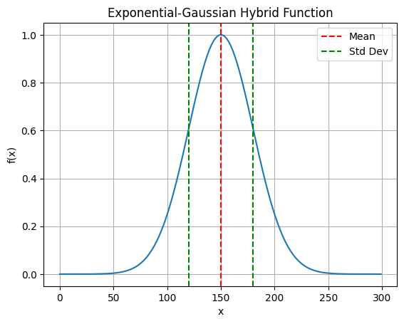

2.2. Exponential-Gaussian Hybrid#
Although the simplest Gaussian model is symmetric, it is not true for most chromatographic profiles. Therefore, we need asymmetric models. EGH model, which was introduced by [LJ01], is the one we have chosen for its mathmatical simplisity and numerical stability as stated in the paper.
Its asymmetry parameter is tau and it reduces to the Gaussian when tau = 0.
import numpy as np
import matplotlib.pyplot as plt
def plot_egh(x, A=1.0, mu=0.0, sigma=1.0, tau=1.0):
from molass.SEC.Models.Simple import egh
y = egh(x, A, mu, sigma, tau)
w = np.sum(y)
mean = np.sum(x * y) / w
variance = np.sum((x - mean) ** 2 * y) / w
std = np.sqrt(variance)
plt.plot(x, y)
plt.axvline(mean, color='r', linestyle='--', label='Mean')
plt.axvline(mean + std, color='g', linestyle='--', label='Std Dev')
plt.axvline(mean - std, color='g', linestyle='--')
plt.legend()
plt.title('Exponential-Gaussian Hybrid Function')
plt.xlabel('x')
plt.ylabel('f(x)')
plt.grid()
plt.show()
x = np.arange(300)
plot_egh(x, A=1.0, mu=150.0, sigma=30.0, tau=0)

def plot_egh_curves(x, params):
from molass.SEC.Models.Simple import egh, egh_std
for k, param in enumerate(params):
A = param['A']
mu = param['mu']
sigma = param['sigma']
tau = param['tau']
y = egh(x, A, mu, sigma, tau)
plt.plot(x, y, label=f"A={A}, mu={mu}, sigma={sigma}, tau={tau}")
if k == 1:
w = np.sum(y)
mean = np.sum(x * y) / w
variance = np.sum((x - mean) ** 2 * y) / w
std = np.sqrt(variance)
plt.axvline(mean, color='r', linestyle='--', label='Mean')
plt.axvline(mean + std, color='g', linestyle='--', label='Std Dev')
plt.axvline(mean - std, color='g', linestyle='--')
print("std=", std)
print("egh_std=", egh_std(sigma, tau)) # std and egh_std should be nearly equal
plt.title('Exponential-Gaussian Hybrid Functions')
plt.xlabel('x')
plt.ylabel('f(x)')
plt.grid()
plt.legend()
plt.show()
Observe the asymmetriy and peak width when tau ≠ 0 in the following examples.
Note that the peak is tailing when tau > 0, although it is fronting when tau < 0.
plot_egh_curves(x, [
{'A': 1.0, 'mu': 150.0, 'sigma': 30.0, 'tau': 0},
{'A': 1.0, 'mu': 150.0, 'sigma': 30.0, 'tau': 20},
])
std= 33.84714025172843
egh_std= 34.80891242918417
plot_egh_curves(x, [
{'A': 1.0, 'mu': 150.0, 'sigma': 30.0, 'tau': 0},
{'A': 1.0, 'mu': 150.0, 'sigma': 30.0, 'tau': -20},
])
std= 33.87692761099224
egh_std= 34.80891242918417